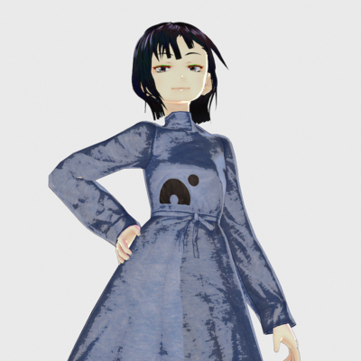

Written by
Koya.S
on
on
Gifts from Nanome
Nanome inc. is the developer company of VR molecular viewer named Nanome.
I’m recently enjoying the software, as is in this or this article.
Nanome thankfully sent me their gift basket, which included their logo T-shirt.
After showing off the goods to my colleages, I found myself hesitating to wear the T-shirt since I think I’ll wear it out.
So, I made this. This won’t be worn out.

Thank you Nanome team. これからもよろしくお願いします.
- Nanome
- Their blog is also informative. Most recent article is about protein engineering
- Vroid Studio